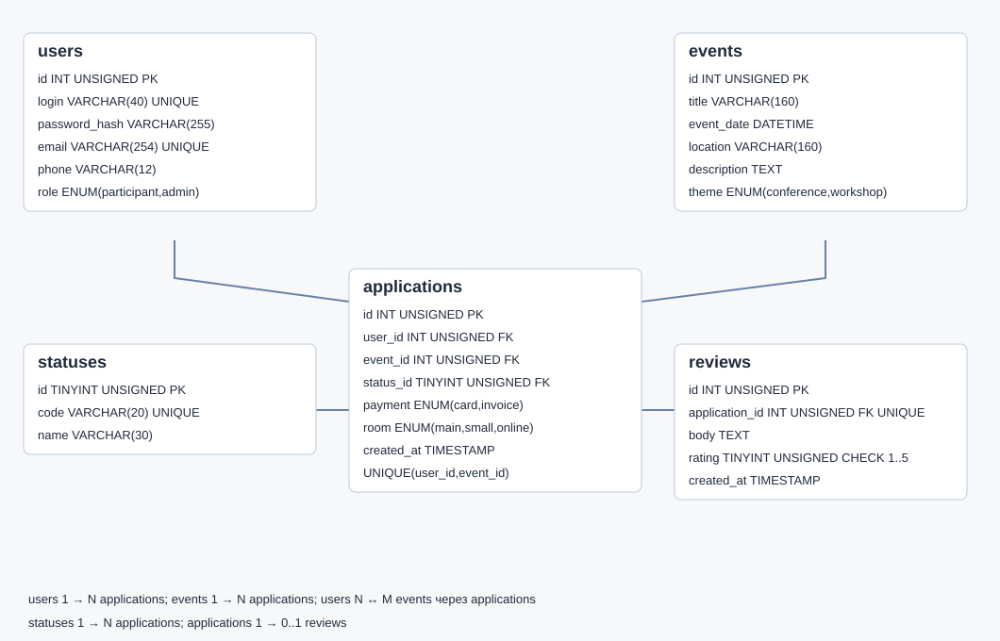

МДК · Индивидуальный график
Практическая работа №2
Проектирование базы данных и ER-диаграмма
Я выделил пользователей, мероприятия, заявки, статусы и отзывы. Связь пользователей и мероприятий многие-ко-многим реализовал через заявки; отзыв связан с одной заявкой. В ER-диаграмме указал типы, первичные, внешние и уникальные ключи. Сохранил исходную и итоговую схемы; справочник статусов и отзывы внедрил миграцией в №12.
Итоговая ER-диаграмма

Материалы
Скриншот результата
Запуск приложения и рабочие исходники